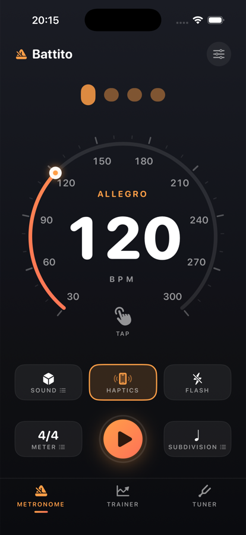
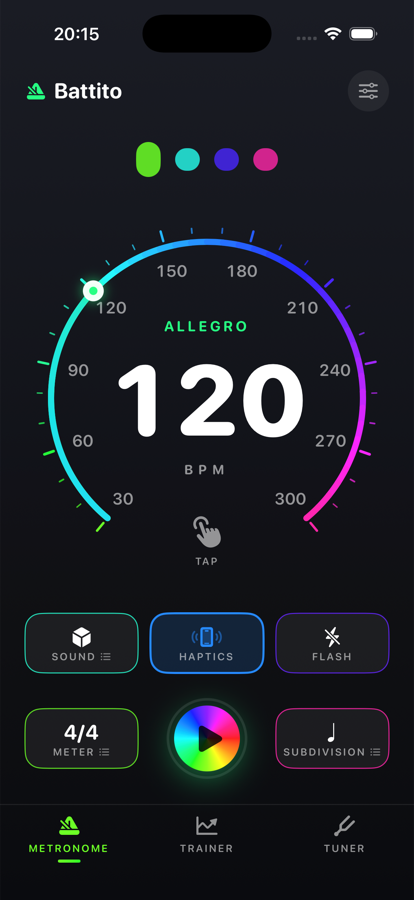
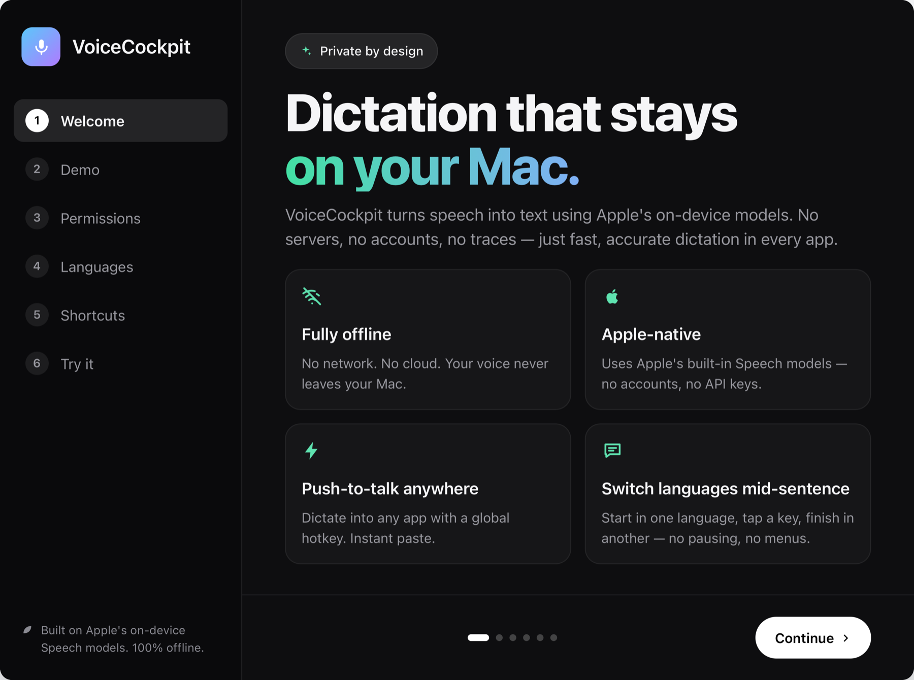
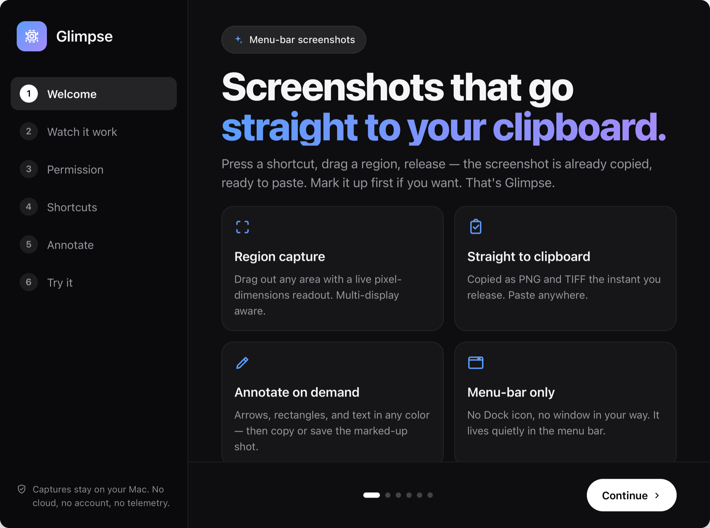

A precise metronome that stays rock-solid. Clicks are pre-scheduled onto the audio engine at
exact sample times, so the tempo never drifts under UI load. Three modes in one app:
metronome, tempo trainer and chromatic tuner.
—Speedometer gauge — tap, drag or tap-tempo, 30–300 BPM
—Sound, haptics and screen flash, meter and subdivision
—Trainer ramps the tempo bar by bar while you play
—Colour themes, including a full-spectrum Disco

Classic

Disco
In development — available when ready
02
VoiceCockpit
Hold a hotkey, speak, and the words appear at your cursor in whatever app is focused.
It runs on Apple’s built-in Speech models, so there is no network call, no account
and no API key — your voice never leaves the Mac.
—Push-to-talk anywhere, instant paste at the cursor
—Fully offline — no servers, no traces
—Switch languages mid-sentence with one key
—Compact listening pill instead of a window in the way

In development — available when ready
03
Glimpse
Press a shortcut, drag a region, release — the screenshot is already on your clipboard,
ready to paste. Mark it up first if you want. It lives in the menu bar with no Dock icon
and no window in your way.
—Region capture with a live pixel readout, multi-display aware
—Captures stay on your Mac — no cloud, no account, no telemetry

In development — available when ready
04
Harbor
A native terminal workspace built around projects. Each project keeps its own folder,
environment, startup command, tabs and split layout — so switching work means switching
project, not rebuilding your window from scratch.
—Terminals and file editors side by side in one window